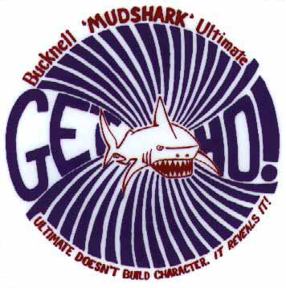
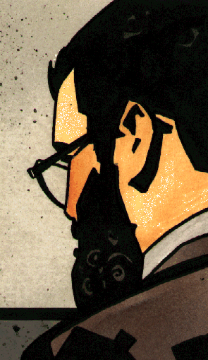
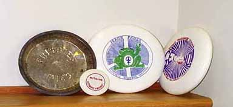

Bucknell Mudsharks Advisor
A club advisor has few responsibilities, beyond signing budget requests and travel permission forms. However, I share an interest in all aspects of frisbee sports with the club teams here at Bucknell.
I have a collection of frisbees to look at if you want to stop by my office, and if you play disc golf on campus, I am the guy that can help you get your frisbee back off the Library roof.
I maintain a file of interesting articles and information about the Bucknell Mudsharks since 1988 (hey, I'm a librarian, OK!)

Bucknell Mudsharks the men's Ultimate Frisbee Team, and the women's Ultimate Frisbee Team,
the Peace Frogs

Any Questions?
Jim Van Fleet
vanfleet@bucknell.edu
Portrait by John Van Fleet
artist of the Marvel Comics series Typhoid
and Topps X-Files: Season One
Revised: October 16, 1998
